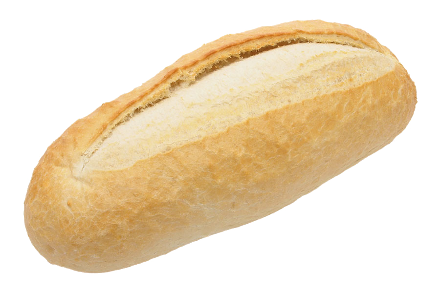

Ile de france et ses boulangeries
Vous habitez en île de france et vous cherchez une boulangerie? Ce site est la pour vous donner une meilleure visibilité de la répartition des boulangeries

Vous habitez en île de france et vous cherchez une boulangerie? Ce site est la pour vous donner une meilleure visibilité de la répartition des boulangeries

Pains et viennoiseries, mais aussi spécialités orientales, pour cette petite boulangerie à façade en verre

Le commerce vous propose des glaces, du pain bio, ainsi que des viennoiseries régionales

Vous pourrez trouver ici des confiseries, une large variété de produits biologiques, des pâtisseries, ainsi que des glaces